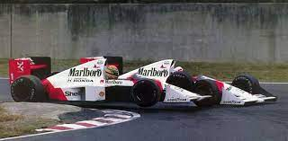
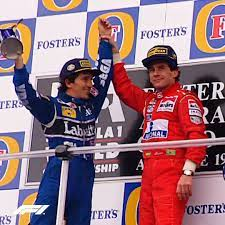
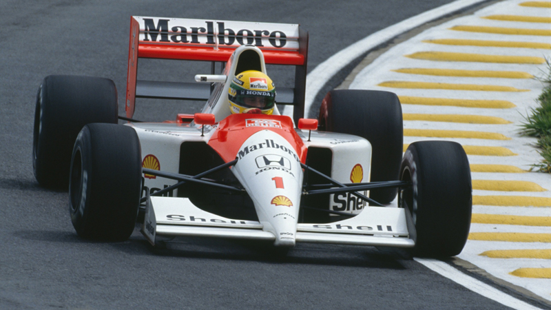
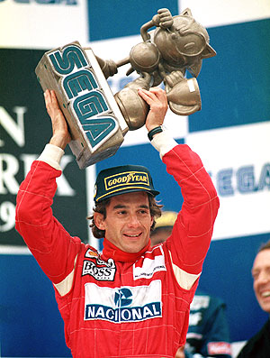
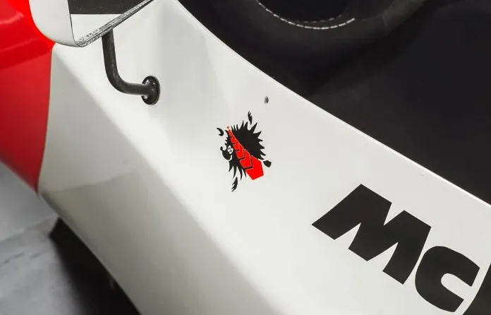
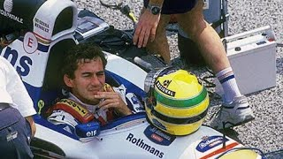
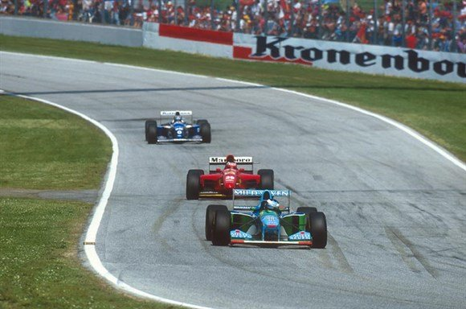
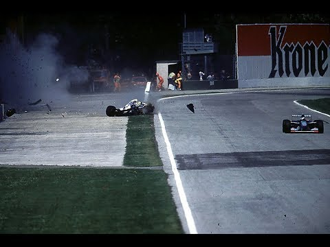

O Mito
Ayrton Senna, o mito do automobilismo brasileiro, considerado por muitos (até Louis Hamilton, o piloto com mais tÃtulos da Formula 1) como o maior piloto da História, sendo três vezes campeão mundial, assim como o outro lendário piloto brasileiro Nelson Piquet, nesse mini-artigo vamos ver porque Ayrton Senna é considerado o maior de todos os tempos.
GP de Monâco
- 🇧🇷 Senna
- 🇫🇷 Prost
- 🇧🇷 Senna
- 🇧🇷 Senna
- 🇧🇷 Senna
- 🇧🇷 Senna
- 🇧🇷 Senna
Senna até hoje, depois de mais de 27 anos é ainda o recordista de prêmios no GP de Monâco, ganhou ao todo seis tÃtulos, sendo cinco deles em sequência (1989-1993), caso ele tivesse ganhado em 1988 teria conseguido sete seguidos, mas mesmo ele tendo perdido em 88 não significa que ele foi mal na corrida, muito pelo contrário!
Como podemos ver no vÃdeo acima, ele fala como uma experiência religiosa, que ele não estava pilotando mais consciente, estava como se tivesse em outra dimensão, que estava muito muito longe de sua consciência, ele estava a 55 segundos de distância de Prost (que também era o seu então rival, e companheiro de equipe e um dos preferidos).
O que é um feito muito dÃficil, uma vez que monâco não é circuito que se ganha uma distância grande, já que é uma pista estreita.
Senna x Prost
Prost e Senna foi uma das maiores rivalidades da história da Formula 1, como se fosse um Cristiano Ronaldo x Messi do automobilismo, só que mais intenso ainda já que eram da mesma equipe a McLaren.
GP Do Japão 1989
| Posição | Piloto | Pontos |
|---|---|---|
| 1 | Alain Prost | 76 |
| 2 | Ayrton Senna | 60 |
| 3 | Nigel Mansell | 38 |
O final de temporada estava tenso para Senna, ele precisava ganhar as duas últimas corridas, mas a situação era boa pra Prost, se Senna perdesse ali, ele já era campeão do mundo, Senna tinha ganhado a pole, mas foi o francês que dominou boa parte da corrida. Senna conseguiu alcançar Prost, e como não tinha nada a perder começou a ir tentar ultraprassar, Prost não deixava, uma vez que significava o tÃtulo para ele.
Senna então acha o momento perfeito, tenta ultrapassar prost pela chicane, já que vinha com mais velocidade, prost fecha e não deixa Senna passar, o carro de Senna vai pra fora da pista onde funcionários da f1 ajudam a empurrar, mas o comitê decide eliminar Senna da corrida mesmo assim, acabando então o sonho do campeonato de 89
GP do Japão 1990 - A Vingança
| Posição | Piloto | Pontos |
|---|---|---|
| 1 | Ayrton Senna | 78 |
| 2 | Alain Prost | 69 |
| 3 | Gerhard Berger | 40 |
Agora a história era o contrário Senna só precisava que Prost não ganhasse e já seria Campeão Mundial, Senna então consegue a pole-position (volta mais rápida no sábado, o que faz com que saia na posição da frente da corrida), mas tinha uma curva na direita da pista, ou seja quem começasse na frente na direita estava no lado sujo da pista, Senna que tinha conseguido a pole position pediu para que ficasse na primeira posição a esquerda, a FIA (comitê da formula 1) não quis trocar de lugar, então o deixando no lado do sujo da pista, enquanto Prost (de Ferrari) no lado limpo.

Senna então frustado com a situação, foi pro tudo na curva, Prost quis manter não dando abetura pra Senna, o que acabou resultando em outra batida, um prato que Senna comeu cru, e assim Senna ganhando o Campeonato Mundial de 1990
A Reconciliação
Em 1990-91 Prost não tinha um carro bom na Ferrari, então saiu no meio do campeonato de 91, só voltando em 93, correndo pela Willians onde vetou a entrada de Senna como companheiro (a Mclaren não ia tão bem com as mudanças que acontecem a cada 3 anos no "meta game" da fórmula 1).
Mas então como 93 seria o último ano de Prost, ambos iniciaram um processo de reconciliação. Senna ganhou o GP da Austrália e levantou Prost para o pódio também, assim terminando uma das maiores rivalidades do mundo esportivo
As Melhores Corridas
GP do Brasil 1991
Senna nunca havia ganhado no Brasil antes, e já era bi-campeão mundial, então existia um hype gigante de quando Senna conseguiria ganhar o GP, a história não podia ser menos interessante, Até a volta 61 Senna e Mansell estavam dominando a corrida, mas então Mansell bate, o que da Senna 40 segundos sobre Patrese, que por causa do acidente estava agora em segundo.
Quando Senna começa a perder as marchas do carro, sendo a primeira marcha a ir, a quarta marcha, então ele teria que passar da terceira marcha pra a quinta, então todas as marchas se foram e ele teve que segurar a alavanca da marcha com uma mão enquanto pilotava com outra, a vantagem sobre Patrese diminuia a cada curva.

Somente com a sexta marcha, pois precisava de muita força para segurar, nas penúltima volta começou a chover (o sÃmbolo de Senna), então senna consegue vencer a corrida, exausto pela força exigida, estava gritando por um mix de dor com alegria de representar em sua casa, não conseguia sair do carro, no último folêgo de força levantou o trofeu no pódio marcando uma das vitórias mais dramáticas da fórmula 1.
GP Donnington-Park 1993
Esse eu particulamente considero o Grand Pix mais curioso que já aconteceu, o meme começa quando a Sega estava querendo ganhar marketing pois estava perdendo contra o concorrente mário na nintendo, então ela anúncia no GP da Europa (Donnington-Park), e com a então equipe de Prost, a Willians.

Senna estava em quarto lugar no grid de largada (na chuva), mas então perde sua posição para o iniciante Schumacher e vai para quinto lugar, mas então a magia acontece!
Senna passa todos, na primeira volta, de quinto para primeiro lugar, e olha que a McLaren não estava em um ano bom, passando a Willians que tinham os melhores carros. Outro rastro deixado por um brasileiro na mesma corrida foi Rubens Barrichelo, que também brilhou, saindo de 12° para 4° também na primeira volta!

Na mesma corrida Senna fez algum imprescendÃvel na história da formula 1 e que também mudou os regulamentos, ele simplesmente fez a volta mais rápida de um GP por dentro do pit-stop, ele percebeu que seria mais rápido passar pelo pit do que fazer a volta normal, então conseguiu a incrivel marca, que depois, mudou o regulamento dentro do pit, agora os carros que passassem dentro do pit tem velocidade limitada
Como a Sega tinha patrocinado o GP, teve um trofeu comemorativo do Sonic, e Senna tinha ganhado em cima do rival Prost, que estava sendo patrocinado pela Sega, ele claro, não deixou passar desapercebido, colocando o seguinte adesivo no carro nas próximas corridas
um ouriço sendo atropelado, uma referência ao stomp que tinha feito na corrida anterior!
GP Do Japão de 1988
Senna já tinha ganhado 7 corridas, Prost tinha ganhado 6, o campeonato tinha 15 corridas, a matemática é simples se Prost ganhasse Senna teria que ganhar a próxima. Senna começou em pole como de sempre, só que o carro falhou caindo assim para a 14° posição.

Mas o motor volta a funcionar então começa a busca incessante de Senna pelo primeiro lugar. Completou a primeira volta em 8º; a segunda em 6º; a terceira em 5º; a quarta em 4º; a 11ª volta era o 3º; quase no final da 19ª volta, ia para 2º. Ao completar a 20ª volta, Prost olha pelo retrovisor direito e vê que o 2º colocado era Ayrton Senna.

Quando Prost viu que ia ser ultrapassado, tentou fechar Senna, o que foi em vão, já que Senna conseguiu passar, manteve o primeiro lugar e ganhando o GP de 1988, e fazendo todas as casas do Brasil vibrar com o seu primeiro tÃtulo de campeão mundial da formula 1!

Um Herói
Nos treinos do GP da bélgica de 1992, o francês Erik Comas, tinha batido na curva Blanchmont, com o carro ficando atravessado na curva

Senna vendo que o colega tinha batido e que ninguem estava perto para ajudar, para o carro perto de Comas, percebe que ele estava desacordado com o pé no acelerador

então Senna desliga imediatamente o carro, Comas até hoje acreditar que Senna o salvou. “Ele desligou a ignição do carro, evitando assim uma explosão. Neste momento, Ayrton Senna salvou minha vida”, disse Comas.
O Fim
Ja havia acontecido dois acidentes no mesmo final de semana em Ímola, um causando a morte do piloto Ratzenberger e outro em um acidente sério do piloto Barrichelo (que considera até hoje o seu pior acidente), Senna ja estava pensando em aposentar, dizem que estava com um olhar distante antes da corrida.
Por uma falha no carro Senna, passou reto na curva Tamburello a 210 km/h, embora tenha se mexido apos o acidente, o acidente foi fatal e perdemos um dos maiores esportistas que o Brasil já teve.
Senna estava com uma bandeira de Áustria, pois quando subisse ao pódio iria homenagear o piloto Ratzenberger que tinha falecido antes
O velório de Ayrton foi digno de um velório de Presidente, comoveu o Brasil inteiro, que estava por uma fase dificil, pois o paÃs estava quebrado, e tinham acabado de perder uma das únicas fontes de felicidade.